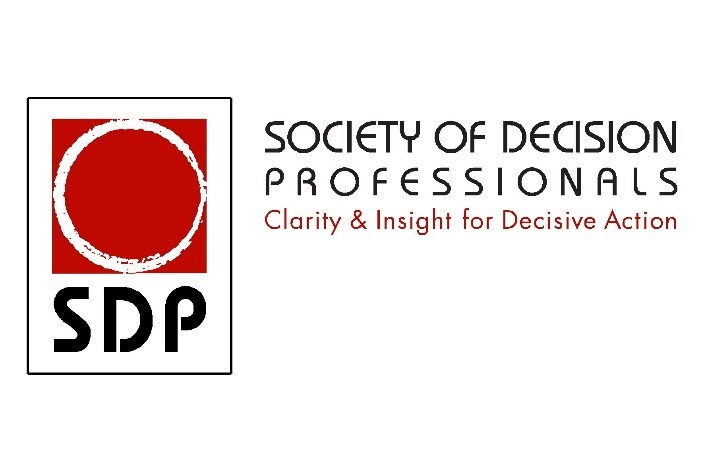
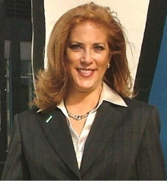

Society of Decision Professionals Leading Decision Quality Workshop
November 7, 2018 09:00 – 17:00 Venue Lunch Provided
The Society of Decision Professionals is proud to sponsor a very special leadership course offering to the European community. Past SDP presidents and decision professional fellows, Carl Spetzler, president of Strategic Decision Group and Ellen Coopersmith, president of Decision Frameworks have joined forces to provide this opportunity. Two key topics will be covered with interactive, facilitated discussions as concepts are shared for a uniquely focused and eventful day. This workshop is designed for an eclectic group: leaders wanting to hone their decision skills, and decision professionals looking to broaden their impact on their organizations and DQ management championship.
Everyday Decision Quality Leaders and Project Managers
Morning session
Leaders and project managers from all walks of life make important decisions on a regular basis, many of which cannot wait for formal, time intensive processes. To address this unmet need, we take the six essential elements of Decision Quality and ground today’s leaders in how to apply them quickly with guides, tools and awareness to enable informed decisions. The goal is a rapid, quality way of thinking. The result is transformational leadership able to utilize Decision Quality BIG and SMALL.
Becoming an Effective Decision Leader with Decision Makers that Outrank You
Afternoon session
The second part of the day focuses on effective facilitation of decision maker conversations. As leaders of strategic decision projects, we face many challenges in driving to Decision Quality with Decision Makers that usually outrank us. We have to build conflict management skills and facilitation techniques that can be deployed in the moment. We have to speak truth to power – but in a way that our truth can be heard. We have to overcome biases and deeply held beliefs. We have to redirect advocacy into productive generation of alternatives and finding the best among those alternatives. In this session we will learn best practices based on many decades of experience, success and lessons learned.
Instructors
Carl S. Spetzler
CEO and Chairman, Strategic Decisions Group
Specializing in strategy development, business innovation, and strategic change management, Dr. Spetzler has developed creative business strategies for major financial institutions, capital-intensive companies, high-technology manufacturers, regulatory agencies, and public entities. Dr. Spetzler works with top management and boards of directors to improve the quality of decisions. He has led numerous senior executive seminars on strategic decision and risk management topics. He is a Life Trustee of the Illinois Institute of Technology and a director of the Decision Education Foundation. He is co-author of Decision Quality: Value Creation from Better Business Decisions (Wiley, 2016). In 2004, he received the Ramsey Medal and the Pioneer Award -- the highest honors awarded by the Decision Analysis Society and the Society of Decision Professionals. He is past president and a fellow of the Society of Decision Professionals.
Ellen M. Coopersmith, P.E.
President, Decision Frameworks, L.P.
Ellen Coopersmith is an expert in decision quality and decision analysis implementation and its practical application in multiple industries. She consults, facilitates and trains organizations across the globe, utilizing her extensive experience in strategy development, scenario planning, decision framing, facilitation and value of information. An engineer by degree from The Colorado School of Mines, Ms. Coopersmith has specialized in decision analysis for last 25 years. As of 2018, she’s trained over 7,000 professionals while assisting companies with both corporate and project level strategic decisions. Ms. Coopersmith is the president of Decision Frameworks, a decision quality enablement firm providing consulting, training and software around the globe. She was the 2017 – 2018 president of the Society of Decision Professionals, a published speaker on decision analysis, a Professional Engineer and SDP Fellow.